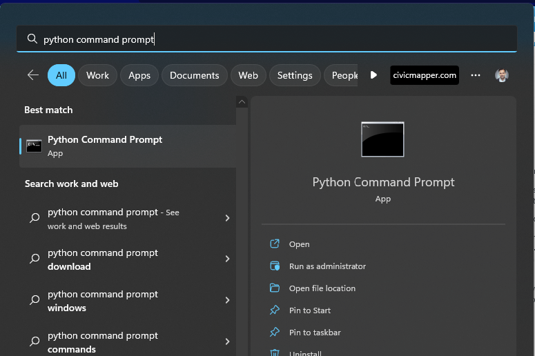

Installing the Toolkit in ArcGIS Pro
The Culvert Analysis Toolkit currently requires ArcGIS Pro version 3.
1. Create a dedicated Python environment in ArcGIS Pro
Note: If you already have a custom Python environment ready to go, you can skip this step and use that instead.
To use the toolkit, you'll need to install it a custom Python environment for ArcGIS Pro.
- Clone the default ArcGIS Pro conda environment.
- Switch the current ArcGIS Pro conda environment to the cloned environment using the Python Package Manager.
For more information on working with Python environments in ArcGIS Pro, see Esri's documentation.
Once you've done this, close ArcGIS Pro.
2. Download the Culvert Analysis Toolkit installation file
Download the latest install "wheel" here.
3. Install
Now that you have the installation file and the custom Python environment, you can install the toolbox.
ArcGIS Pro comes with a "Python Command Prompt" shortcut available, which runs a batch script that automatically starts a command prompt with ArcGIS Pro's active Conda environment available.
Typically this gets added to your Windows Start Menu alongside the shortcut to ArcGIS Pro.

- Open the Python Command Prompt that came with your ArcGIS Pro installation.
- In the command prompt, run
pip install "<path-to-the-whl-file\drainit.whl>". You'll replace"<path-to-the-whl-file\drainit.whl>"with the full path to the wheel file you downloaded in the previous step. Include the quotes".
Restart ArcGIS Pro. Open an existing or new project, and open the Geoprocessing you should see a Culvert Analysis Toolkit toolbox listed alongside other toolboxes in the ArcToolbox pane of ArcGIS Pro:

Handling Upgrades
Upgrading the toolkit
When a new release of the toolkit is available, you won't need to create a new dedicated Python environment as described in step #1 above. Download the new release (#2) and install (#3) in your existing custom environment to replace the older version of the toolkit.
Upgrades to ArcGIS Pro
Since version 3.0, ArcGIS Pro provides a path for upgrading custom Python environments made with previous versions. Depending on the changes to the Python version, that upgrade may or may not affect the toolbox.